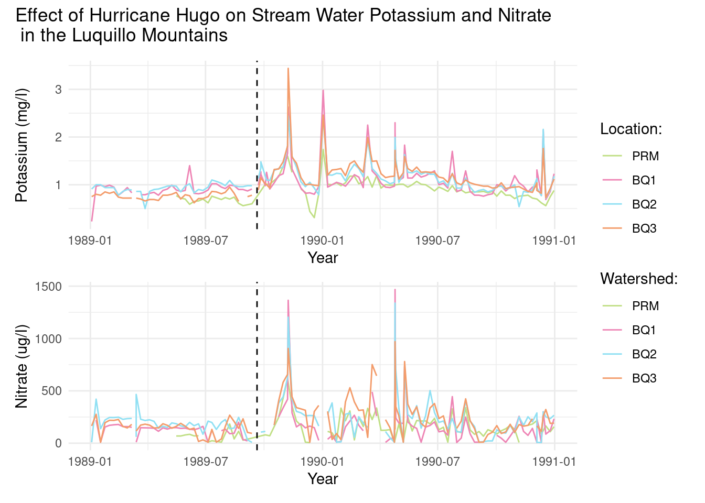

rm(list=ls())final_proj
### **Loading Libraries**
library(here)
library(janitor)
library(tidyverse)
library(readr)
library(patchwork)### **Read_files Function**
#Import data from multiple files into R
read_files <- function(file_names) {
# Loop through the file names and read the CSV files into dynamically named variables
for (i in seq_along(file_names)) {
# Construct the dynamic name for the variable
var_name <- paste0("data_", i)
# Read the CSV file
file_data <- read_csv(here(pathway, file_names[i]), na = c("-999", ""))
# Assign the data frame to a variable with the constructed name
assign(var_name, file_data, envir = .GlobalEnv)
}
}### **Data Cleaning Function**
#Process and merge data from all files
#Iterating through each single file to select the defined parameters and join all files
combined_df<-NULL
cleaning_function<-function(parameters){
for (j in seq_along(variables)) {
# Get the data frame associated with the current variable name
current_data <- get(variables[j])
# Select the desired columns (from parameters list)
selected_col <- current_data %>%
select(parameters)
# Perform a bind join
combined_df <- bind_rows(selected_col, combined_df)#bind_rows
}
return(combined_df)
}### **Defining the Parameters**
#Link to where the data resides
pathway <- "/courses/EDS214/group_project/2024/tropical-aqua-titans/raw_data"
#Names of files
file_names <- c("RioMameyesPuenteRoto.csv",
"QuebradaCuenca1-Bisley.csv",
"QuebradaCuenca2-Bisley.csv",
"QuebradaCuenca3-Bisley.csv")
#Define Water Quality Parameters
parameters<-c("Sample_ID",
"Sample_Date",
"NO3-N",
"K")
#Date Range
start_year <- 1989
end_year <- 1994### **Running the Functions**
read_files(file_names)
variables <- ls(pattern = "^data_")
combined_df<-cleaning_function(parameters)##Section 2 - Graphing the WQ data
# Filter the data by the specified year range and make column name lower case
filtered_df <- combined_df %>%
filter(year(Sample_Date) > 1988 & year(Sample_Date) < 1991)
filtered_df <- clean_names(filtered_df)
filtered_df<-filtered_df%>%
mutate(across(3:ncol(filtered_df), ~ as.numeric(as.character(.))))### **Plotting the data**
#plot for K
p1 <- ggplot(filtered_df) +
geom_line(aes(sample_date, k, color = sample_id)) +
labs(x = "Year",
y = "Potassium (mg/l)") +
scale_color_manual(values = c("#C0DF85", "#EE85B5", "#90E0F3", "#F39C6B"),
name = "Location: ",
labels = c("PRM", "BQ1", "BQ2", "BQ3")) +
geom_vline(xintercept = as.numeric(filtered_df$sample_date[39]), linetype = "dashed") +
theme_minimal()
# plot for nitrate
p2 <- ggplot(filtered_df) +
geom_line(aes(sample_date, no3_n, color = sample_id)) +
labs(x = "Year",
y = "Nitrate (ug/l)") +
scale_color_manual(values = c("#C0DF85", "#EE85B5", "#90E0F3", "#F39C6B"),
name = "Watershed: ",
labels = c("PRM", "BQ1", "BQ2", "BQ3")) +
geom_vline(xintercept = as.numeric(filtered_df$sample_date[39]), linetype = "dashed") +
theme_minimal()
# patchwork of both plots
p3 <- p1/p2
p3 +
plot_annotation(title = "Effect of Hurricane Hugo on Stream Water Potassium and Nitrate\n in the Luquillo Mountains") + theme(plot.title=element_text(hjust=0.5)) +
plot_layout(guides = "collect")Warning: Removed 1 row containing missing values (`geom_line()`).